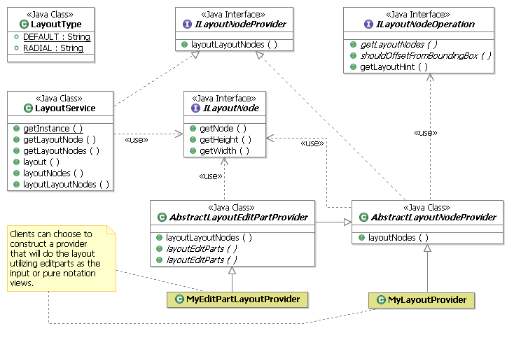

Developer Guide to Diagram Runtime Framework
Contents
Figure I: GEF Model View
Controller Architecture
Figure II: GMF Model View
Controller
Figure III Core notation
meta-model:
Introduction
This guide is meant as an initial introduction to developers interested in creating Eclipse based graphical editor that are based on an EMF model. GMF is top level platform that is meant to bridge the tools projects of GEF and EMF.
GMF is a platform upon which graphical editors can depend upon to gain a rich initial feature set and inoperability between EMF and GEF. It is designed to eliminate the need for the client to manage diagram persistence and lets the client focus on managing their business logic model in the editor.
This guide won’t cover the generative aspects of the GMF
project. These capabilities are part of the
GMF SDK and can be referenced in a separate guide.
Pre-requisites
The initial requirements for a client developing on top of GMF are as follows:
1. At least an introductory level of knowledge of the GEF and EMF tools projects which GMF is built upon. Recommendation is to familiarize oneself with some on the online documentation available for those projects.
2. A semantic model is defined in EMF that represents the data persistence model for the Editor. i.e. the Editor is editing the data stored in the semantic model.
· Java (J2SE)
o “Java Technology”
· Eclipse
o “Eclipse Platform Technical Overview”, by Object Technology International Inc.
o “Notes on Eclipse Plug-in Architecture”, by Azad Bolour, Bolour Computing
o “How to Use the Eclipse API”, by Jin des Rivieres, OTI
· EMF
o “Using EMF”, by Catherine Griffin, IBM
· GEF
Overview
GMF is a framework that is a bridging technology between
the GEF platform and the EMF modeling platform.
GEF provides a platform for building graphical editors and EMF is a
modeling technology for managing and persisting data at a higher level of
abstraction. The bridge that GMF
provides is a links these technologies seamlessly so that the graphical editor
is displaying data stored and managed using EMF.
There are usually 2 aspects to the data stored in a
graphical editor. There is the
diagramming data that represents the shapes and connections displayed in the
editor (otherwise known as notation), and also the semantic data that the user
is editing. From the graphical editor
user’s point of view, the two are synonymous – the notation view is simply a window
into the semantic data. However, there
is an important distinction between the notation and semantic that makes it
necessary to separate them. The semantic
data can be displayed in different contexts or editors and as such shouldn’t
store information about how it can be displayed in an editor. Also, the semantic data can be displayed
multiple times on the same diagram potentially which means the notation
information needs to be stored multiple times.
In order to facilitate this it is necessary that the notation
information be stored in a different model (define by a notation meta-model)
that references the semantic model.
GMF addresses this by providing a logical persistence model for GEF through the diagram layer. It defines a notation meta-model in EMF that is generic and logically separated from the semantic model persistence. This allows multiple clients of GMF to have diagram interoperability through a compatible and consistent notation format. Additional, since the notation is generic is allows for management of the notation data to be encapsulated from the client letting them focus their development efforts on the business logic. As well, the separation of notation and semantic lets the client define multiple notations (shapes) for the same semantic element. In addition is possible to have the semantic element to be visualized different depending on a context.
Figure I: GEF Model View Controller Architecture

Figure II: GMF Model View Controller
Architecture with addition of 2 tier model layer to support generic notation meta-model

Since GMF is designed as a platform for different domain editors to be built on, it needs a robust extensibility solution that will allow for clients to extend off of other GMF clients and allow their construction to be scalable through the plug-in architecture. The extensibility of GMF is allows for on-demand loading of client components using the Eclipse extension point mechanism and a GMF based Service-Provider infrastructure.
Aside from the architectural benefits to the platform, there is a rich set of features that clients can optionally include in their editor or they would inherit with little overhead. There is a special attention given to usability in the diagram editor and a service for providing diagram assistants that can appear as pop-ups or connection handles on the shape to assist in creating elements using a context to guide them. More advanced geometry capabilities are also included through a generic geometric shapes feature and support for SVG display and export.
Example of geometric shapes:

When building domain specific shapes, it is useful to have proper building blocks to construct them. Constructs such as containment, list compartments, automatic synchronization of notation to semantic are built into the platform to make construction of a new shapes as ubiquitous as possible.
Example Logic circuit:
If we consider the logic circuit in the example we provide as part of the SDK, this has complex behavior for containment, creation of the terminals and color display. Using the GMF infrastructure, the shape was constructed using a shape compartment for containment and the terminals are created using a border shape infrastructure to avoid having to construct these concepts from first principles.

Notation meta-model
The unifying force of GMF is the notation meta-model which provides the concrete link between the EMF and GEF. It is the scaffolding around which GMF diagram capability is built. The most important aspect about the notation meta-model is that it is completely domain independent. By having it be generic across domains, this allows the engine to behave in a common way and provide a common feature set that can be absorbed into those domains. The only link to the semantic model is a reference stored on the View element in the hierarchy. The GMF editparts always navigate to the semantic model through this reference.
Figure III Core notation meta-model:
The following is the core hierarchy of the notation meta-model. There are styles and enumerations not displayed.

There are 4 main hierarchies that make up the notation meta-model.
· View which is the main container that defines a shape. There are 3 subclasses of view that make up the major components of a diagram. Of course the Diagram itself is the main container for all the shapes. Then the Diagram element contains Nodes (shapes) and Edges (connections) that connect the Nodes on the diagram together.
· Style: Styles are owned by View. They represents the properties of a View that need to be persisted in order to properly display the shape. Typical values with-in the Style hierarchy are for storing color, font, geometry information etc.
· LayoutConstraint: This is the hierarchy that defines the position of a Node in the diagram. Most often this will be a Bounds object defining a size and position. The hierarchy is flexible to define different kinds of positioning information such as a Ratio that represents area allow for a subcompartment within a container relative to it’s children.
· Bendpoints: Similar to layout constraint except it has a multiplicity on the Edge view, the bendpoints are the points that constraint the Edge on the diagram.
The notation meta-model has been designed with a number of conscious benefits in mind for the graphical editor.
1. Customized for team support. Often when multiple team members are working on the same resource and then check-in or deliver their work at the same time a merge conflict can arise. The notation meta-model is designed to minimize these merge conflicts through the separation of styles into granular properties that can be merge independently.
2. Customized for GEF (relative bendpoints, layout constraints). Since GMF is meant to be a bridge between EMF and GEF it makes to incorporate some GEF concepts into the persistence model and treat them as first class citizens. This is the case with the relative bendpoints that are using to store the connection edge points. In other editors, these bendpoints are usually an absolute (x,y) value. GEF stores these values internally as two points that are a relative value to an anchor on the source and on the target.
3.
Though the meta-model model is generic it doesn’t mean
that it has to remain static as well.
Through the style hierarchy it is possible to extent the notation
meta-model to store domain specific properties that individual editors may
need. Additionally, this hierarchy
allows the notation meta-model to evolve in the future as new feature are added
without breaking backward / forward compatibility.
Extensibility
The extensibility of GMF is an area where the platform differs greatly from the GEF mechanism for integrating a domain editor. We will consider the general methods for extending each infrastructure independently.
Extending GEF:
· Classic Java extensibility – inheritance, aggregation.
o Issues: static, overrides force knowledge of other components, plug-in loading.
· Limited hooks – main entry point is through EditPartFactory subclasses installed by the Viewer.
· No separation of semantic vs. notation.

Extending GMF:
· Utilizes GEF extensibility then adds additional extensions points inside EditPart creation itself (EditPolicies, Decorations). By delegating to the Service, then the service can manage multiple providers and dynamic contributions based on runtime criteria.
Services
A set of services with-in the GMF diagram plug-ins provide this extensibility for the platform. They are more or less consistent in their usage but have some differences to account for their functionality. Notable common denominators:
· Follows Eclipse extensibility paradigm
o
Uses
extension point/extension concept
o Eclipse PDE can be used to create plug-in
· Service infrastructure support for dynamic providers, overrides of existing providers.
· Support for on-demand loading – specify providers in XML.
· Allows any type of override without introducing any direct domain specific dependency in core services.
· Providers can be prioritized to give priority over existing providers.

View Service:
ViewService is responsible for constructing the notation view elements that are persisted to represent the diagram. A typical provider returns a factory class that would create a notation view, set it’s styles and layout constraint as appropriate. Next it would add containment to the view by recursively calling the ViewService with a hint that is used by the service to determine another provider and get the factory for it.
· View providers create View Factory objects by:
o Creation methods: creates new notational elements and returns the View notation element to it. Hints include:
§ The view kind (org.eclipse.gmf.runtime.notation.*): Node, Edge, Diagram
§ The semantic reference (EObject)
§ The factory hint (String)
§ The container view (View)
§ The index in parent collection
§ The preference store containing default value overrides.
· Each created view factory object subclasses from one of 3 abstract classes for creating Nodes, Edges or Diagram:
EditPart Service:
EditPart Service is similar to the View Service except that a provider will return the EditPart class that is the controller for the notation view and semantic element.
· An Editpart provider creates an EditPart for a given model element.
· Providers implement the IEditPartProvider with the following method:
o EditPart createGraphicEditPart(View view)
· Providers can provide new editparts for new or existing model element types.
· Providers should avoid providing new editparts where the intent is just to customize the set of editpolicies (this can be done more efficiently using the EditPolicy service)

EditPolicy Service:
EditPolicy Service is an important extensibility point since it allows clients to install their own editpolicies on existing EditParts without overriding the EditPart itself. Each EditPart when it is created in GMF will call the EditPolicyService on activation to determine if any clients are contributing to their set of EditPolicies.
· An Editpolicy provider creates EditPolicies for a given editpart.
· Providers implement the IEditPolicyProvider with the following method:
o void createEditPolicies(EditPart editpart)
· The service gives all interested providers a chance to create editpolicies for the given editpart in order of priority from lowest to highest.
· Overriding an editpolicy is done by assigning a new one in the same role.
· Assigning ‘null’ to an editpolicy role is equivalent to removing that role behavior.
· The service is very useful for adding/removing behavior without having to subclass targeted editparts.

Palette Service:
The Palette Service is the entry point to define a custom palette for a domain editor with a set of creation tools organized into a drawer or stacks. The concept of a Service is useful here if there are multiple contributors to a domain editor and each wants to make individual contributions to the palette without depending on each other.
· Palette providers contribute to the palette of a given editor with a given content
· Palette providers are encouraged to utilize the DefaultPaletteProvider, since all the contributions could be described in the XML extension.
o Clients typically will subclass PaletteFactory.Adapter to specify the creation tools that will be contributed for each palette entry.
· Palette providers can contribute:
o New Palette Drawers
o New Palette Groups
o New Palette Separators
o New Palette Tool Items in drawers/groups.
o New Palette Template Items in drawers/groups
Decoration Service:
The DecorationService is designed as a simple way to annotate an existing shape without knowledge of the implementation of that shape. It allows for an acetate image on top of a shape at a particular location. A decoration acetate can adorn any shape on the diagram based on a certain condition since it is a layer above the shape it can cross EditPart hierarchies. An example could be a image on top of shapes indicating whether or not the corresponding resource has been checked out of source control or not.
· Decoration providers creates decorations for a given adapter.
· Providers implement the IDecorationProvider with the following method:
o void createDecorators(IDecoratorTarget decoratorTarget)
· The IDecoratorTarget api lets the client install a custom Decoration or an image to a pre-defined location on the shape.
· The service could be used by any client that needs to decorate a shape on the diagram without having any dependency to GEF.
Layout Service:
The Layout Service is essentially a hook into the arrange action on the toolbar and context menu. This action will arrange the shapes on the diagram automatically in a more organized and hopefully esthetically pleasing manner. However, layout itself is very difficult to do generically and domain specific editors may wish to override the default layout to do a custom layout more suited for the domain.
· Layout providers creates a Runnable object that will execute a layout for a given layout type.
· Providers implement the ILayoutNodesProvider with the following method:
o public Runnable layoutNodes( List layoutNodes, boolean offsetFromBoundingBox,
· IAdaptable layoutHint);
The List is a list of Node shapes to be laid-out on the diagram surface.
The boolean offsetFromBoundingBox indicates if the layout is to be kept with-in the relative bounding box of the existing node shapes.
The layoutHint is an adaptable that usually adapts to String. It tells the provider what kind of layout is desired.

Interactions
A fundamental use case in a graphical editing framework is how elements get created. In this section we will explore the differences in how an element gets created in the GEF framework versus the GMF framework using UML interaction diagrams. This will help clarify some of the basic architectural differences where GMF has differentiated from GEF to achieve extensibility and separation of concerns (semantic vs. notation).
Creation of an element in GEF
In GEF since there is no concerns about the separate of notation and semantic they follow the pattern of a request which asks a factory for the element to create on mouse move and then on mouse click adds the created element to the target container.
1. Creation tool mouse move on diagram surface

2. Creation tool mouse click on diagram surface
The cached object created in the mouse move operation is added to the container in the creation command execution which triggers through events the creation of the corresponding EditPart and figure containment hierarchies.
Creation of an element in GMF
1. Creation tool mouse move on diagram surface
The interaction is similar to the GEF interaction except for some subtle differences. The request is handled by the GMF defined CreationEditPolicy which will aggregate a semantic creation command and a notation creation command and return it. Also, it is notable that the commands don’t create the orphaned element before execution occurs by calling a factory. This is important in order to properly (and generically) handle undo / redo which are managed through the command infrastructure.

2. Creation tool mouse click on diagram surface
We will look at the GMF creation in 2 phases. First the element creation phases of the semantic element and notation element and then the editpart and figure creation which respond to the creation in the first phase.
· First phase (Creation of semantic and notation): Since the commands have been created in the mouse, the command compound executes each sub command serially. The execution creates the semantic element first and the result is fed to the notation element creation which calls the ViewService to create a notation element for a given semantic element. Not visualized in the interaction below is where the ViewService looks for a provider among all the registered providers which “provides” for the element passed in. This provider is what returns the ViewFactory which will create and initialize the proper notation view element.
· Second phase (Creation of EditParts and Figures): In this phase, the editpart of the container where the semantic element was added is listening to the notification event for adding the element. The notification occurs when the write action which wraps the command execution is closed. Everything within the write action is registered by the transaction so that the gesture can subsequently be undone and redone. In the interaction below, the DiagramEditPart responds and calls refreshChildren as per the GEF mechanism. When reaching for the EditPartFactory, GMF returns the EditPartService which implements this GEF interface. Similar to the ViewService, the EditPartService will find the appropriate provider from all the registered providers and that provider will return the EditPart class that the EditPartService needs to create.